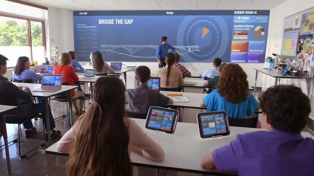

Technological evolution revolutionized the way we live our lives.Todey,Internet is the most wildly used technology. From home to office, travelling by looking the google map, sharing picture with your relatives or friends through various applications, Importantant message can just send within in the seconds and a lot more comes all in internet, with all this easily usable technologies Positive and Negative effects can be seen.
Positive effects
| On Education | On Environment | On Culture |
|---|
On Education:
There is the great saying by George Couros "Technology will not replace great teachers but technology in the hands of great teachers can be transformational." Student and teacher plays an important role in the education through technologies like Laptop, mobile, which made much more strong bond between student and teacher while asking questions to giving answers.Through technology, many outside resources can be used for the better education. In the study case, students can be able to handle more complex assignments and do more with higher-order skills because of the supports and capabilities provided by technology.
Future of Technology..Image link
On Environment:
Many technology devices use in smart home such as linking sensors and other appliances connected to the Internet of Things(IoT) that can be remotely monitored and programmed in order to be as energy effivient as much as possible.Positive effects can be seen on the technology of the internet on the environment due to the fact that social media can raise the awareness of global issue and worldwide virtual laboratories can be created in the future and electric car can also be the another great benefits in the environment. Hence, if we properly use the technology that we have our environment can be very great.
On Culture:
Internet technologies is the most connecting business in the culture.This technology are jumping to next generation of legacy to adopt more advanced solutions.Technology can't replace human interaction and many culture are exchanged through socail media like facebook, instagram, google or the telephone.Developing new relatonships and friendships is also can be the another positive impact on the technologies.

Future culture..Image link
Negative effects
| On Physical health | On Environment | On Pyschological |
|---|
On Physical health:
Technologies can be a main issue for Physical health such as poor posture, many people use computer and mobile devices can contribute to bad posture.Over time, this may lead to musculoskeletal issues. Many young adults can suffer the back and neck pain due to the excessive use of mobile devices and computer. Correcting posture problems while using technology can lead to an overall improvement in posture and strength in the core, neck and back.Taking short breaks, such as walking around going out for a while can keep the muscles loose and avoid tension and incorrect posture.
On Environment:
"Technology is that which separates us from our environment" Marshall McLuhan Technology makes our life easier but technology can also sparates us from our environment.Through constant update of the technologies many air and water pollution can be seen because of burning of fossil fuels, factories, vechiles.The consequences of air pollution include negative effects for humans, animals and global warning. On the other hand, water pollution can also be seen due of domestic waste and pesticides.Hence, People are ignoring the real environment and being more favarable to the fantasy.
On Pyschological:
Technologies, such as social media like facebook, Instagram and Twitter. are establish to bring people together.However,they may have the opposite effect such as isolation. Many researcher found that social media can cause depression and anxiety.The depression and anxiety are seen to below 18 which create negative impact on technologies.
Isolation..Image link